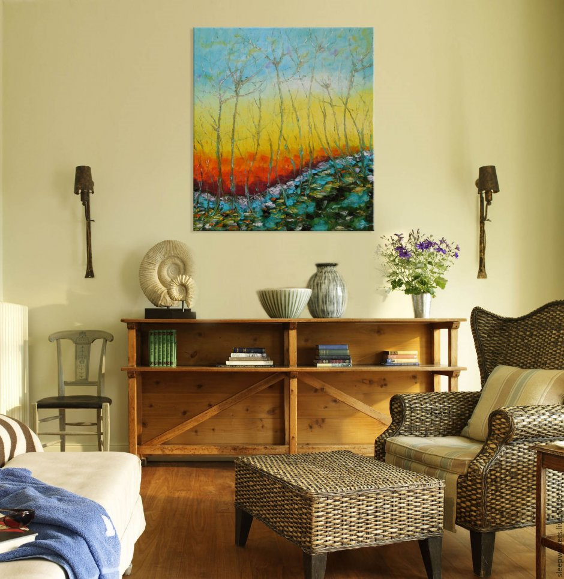
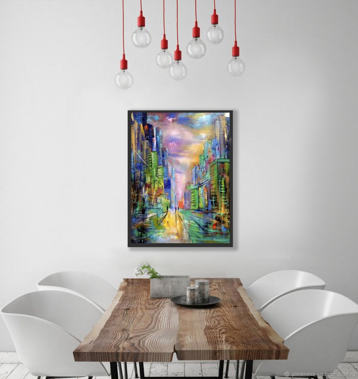
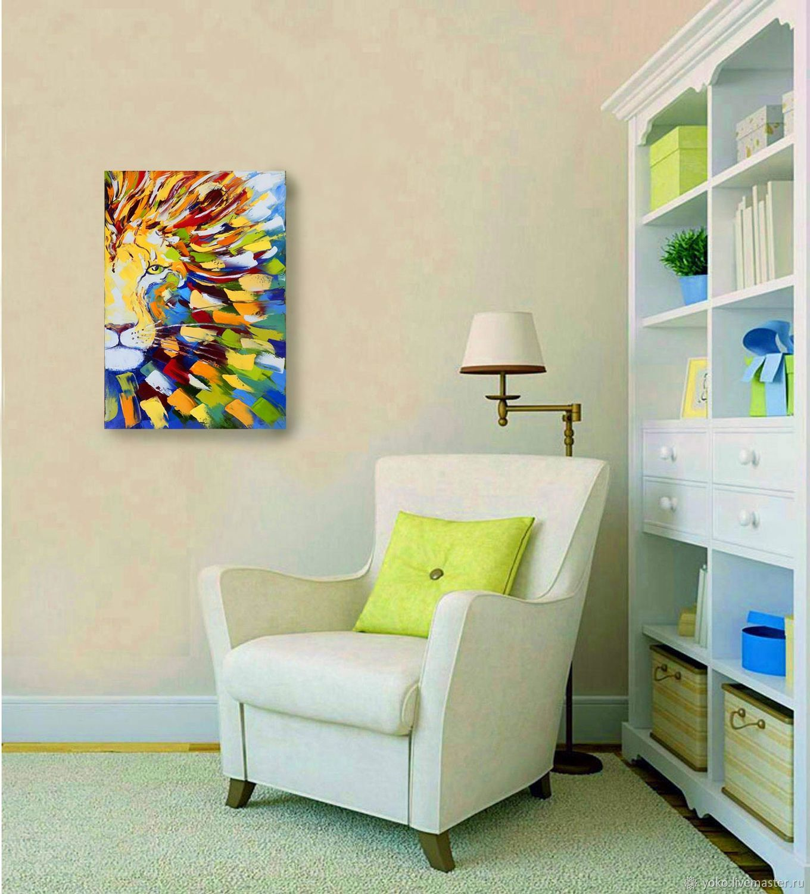

Картина в подарок
Картина профессионального художника в качестве подарка — эмоционально сильный ход! Небанальный, статусный и элегантный подарок.

Да, выбрать картину в подарок сложно. Но мы вам поможем сделать это быстро и комфортно!
Почему стоит купить картину в подарок в галерее
- Качество картин. В нашей галерее находятся картины профессиональных художников, признанных арт-сообществом и культурными институциями. Работы некоторых из них приобретены Третьяковской галерей и Русским музеем.
- Все картины являются авторскими уникальными работами и существуют в единственном экземпляре. Вы можете быть уверены в том, что ваш подарок такой один - эклюзивный в своем роде, второй такой картины ни у кого не будет.
- Оперативная помощь в выборе. Не волнуйтесь, мы обязательно успеем подготовить ваш подарок в срок.
- Доставка в день обращения или на следующий день (по Москве и Московской области бесплатно).
- Большой ассортимент: 46 профессиональных художников, более 350 картин.
- Подберем картины под конкретного человека, его статус, интересы или просто под интерьер.
Как галерея подбирает картину в подарок?
1. Мы попросим предоставить нам немного дополнительной информации, без которой процесс подбора картин теряет смысл. А именно:
- Сколько лет человеку, для которого подбираем подарок?
- Чем он занимается (род занятий) или увлекается (хобби)?
- Важен ли бюджет на подарок? Если да, то какие рамки?
2. Далее, исходя из этих данных, мы готовим презентацию с тематическими подборками картин и добавляем наши комментарии – почему, по нашему мнению, именно эта картина уместна в данном случае в качестве подарка. Темы обозначаем примерно так (в каждом случае - свои нюансы и темы):
- Карьера,
- Ритм города,
- Поиски себя,
- Отдых,
- Romantic.
Вам остается выбрать подходящую тему. Любая из этих тем сможет стать символом-пожеланием и подарит положительный заряд и вдохновение к открытию новых горизонтов!
3. После того как выбор сделан, мы бесплатно упакуем картину в подарочную упаковку, оформим сертификат подлинности и привезем картину по нужному адресу. Доставка по Москве бесплатная.

Большие и очень большие картины упаковываем в плотную коричневую крафт-бумагу и перевязываем джутовым шпагатом. Получается минималистично и экологично. На лицевую сторону упаковки наклеиваем изображение картины.
Расскажем вам про некоторые реальные случаи, когда картины у нас покупали в подарок:
- Картину с изображением крымской крепости в Судаке приобрел владелец одной из компаний. Когда он был маленьким, мама часто возила его на летний отдых именно туда. Картина была выбрана в подарок маме. Мы не знаем всех подробностей, но чувствуем, что это очень теплая семейная история.
- Картину с двумя влюбленными фигурами, мужской и женской, выполненную в абстрактной манере, приобрел мужчина для своей супруги в подарок на день рождения. Оказывается, незадолго до этого она смотрела на нашем сайте картины и эта картина ей очень понравилась. И наш клиент решил втайне от супруги приобрести ее и разместить в доме в день рождения любимой! Очень трогательная история — столько внимания, столько заботы!
- Авангардную работу с изображением двух лодок под названием «Бескрайний океан нашей любви» приобрели в дар одному из банков от их партнеров. Уверены, в таком подарке есть доля юмора — и это здорово!
- Черно-белая абстрактная работа «Наваждение» была приобретена в подарок руководителю одного из силовых ведомств от его сотрудников. Здесь явно название картины и профессиональная деятельность совпали не случайно!
- Авангардный пейзаж с известным видом Санкт-Петербурга девушка приобрела для своего мужа-иностранца. Как оказалось, ему очень понравился город, когда они были там вместе.
- Абстрактную работу в сине-белой гамме с названием "Зимние танцы" компания приобрела в подарок своему бизнес-партнеру, который увлекается горными лыжами.
- Работу с названием "Чемпион" приобрела женщина-руководитель в подарок одному из бизнес-партнеров.
Таких историй много. И они все уникальны и не похожи друг на друга! Но самое главное, что мы видим желание приятно удивить, «улыбнуть» или напомнить о приятном событии в жизни именно этого человека!
И здесь не важен интерьер, его цветовая гамма и стилистика. Важен контекст, в котором будет преподнесен подарок.
Как заказать картину в подарок:

Написать на почту psyduckyduck@gmail.com

Позвонить нам по телефону +7(905)239-69-77

Оставить заявку здесь, через форму заказа
Живопись профессионального художника – это именно тот подарок, который, несомненно, вызовет бурю эмоций. При этом картину в подарок выбрать достаточно сложно, ведь нужно учитывать не столько интерьер, где предположительно разместиться работа, сколько вкус и знание современного искусства того, кому она предназначается. Обычно о вручении картин задумываются близкие друг другу люди, супруги, партнеры по работе, родственники. Нередко выбранный сюжет связан с определенной историей и несет недвусмысленный посыл от дарителя.

Как выбрать картину в подарок?
Презентовать произведение искусства человеку, далекому от живописи, или предпочтения которого неизвестны, не стоит. Ведь картина в подарок – это вручение части души автора, собственного настроения и мыслей. При подборе на второй план уходит стилистика, цветовая гамма и даже габариты работы. Более важным становится причина, те эмоции, которые возникли во время просмотра изображения, а также контекст, который обрамляет желание купить картину в подарок.
Хотя некоторые правила все же не стоит игнорировать, тогда к посылу добавиться еще и тонкий вкус дарителя:
1. Техника исполнения. Холст/масло. Холст/акрил. Бумага/акрил. И так далее. От техники исполнения сильно зависит стоимость картины.
2. Размеры полотна. Нужно понимать, что масштабные работы могут быть по праву оценены лишь в просторном помещении, где присутствует возможность их рассмотрения с удаления не менее метра. С возможностью освобождения под работу целой стены, большая картина требует вокруг себя «воздуха».
3. Подлинность. Подарок подразумевает вручение чего-то оригинального, того, что нельзя заменить или повторить. Настоящее произведение искусства – это единичная работа, даже при желании автора повторить сюжет, воссоздания точной копии уже не будет. Подлинник всегда будет заверен сертификатом с указанием авторства. И настоящий ценитель обязательно это высоко оценит.
Как правильно купить картину в подарок?
Даже один и тот же сюжет может быть абсолютно по-разному изложен разными авторами. В руках пейзажиста, импрессиониста и абстракциониста изображение морского побережья или цветка будет изложено по-разному. Шаблонные советы по выбору картины по гендерной принадлежности или статусу не актуальны, они не обеспечат должный эффект. Зато вкусы при подборе декора или выбор стиля интерьера могут многое рассказать об их владельце.
Тот, кто живет в классическом интерьере, не оценит абстрактные или графические работы. И напротив, ценителю минимализма или аскетизма стиля лофт не стоит презентовать реалистичные пейзажи в богемных рамах. Во многом упростить задачу позволит услуга по онлайн примерке картин. Для этого необходимо:
1. Сделать фото предполагаемого места расположения работы.
2. Выбрать картину из онлайн-каталога.
3. Перейти в раздел «Примерка картин» из описания выбранной работы.
4. Загрузить фото.
5. При помощи интуитивно понятного интерфейса поменять размеры картины, расположение и ориентацию.

Упаковка, доставка и вручение
Современные работы могут быть разного формата. И если, купить в подарок картинунебольшого размера, то можно обойтись самостоятельной перевозкой. Но вот большие подарки потребуют бережной транспортировки. Онлайн-галерея SMART предлагает упаковку картины в подарок своими силами. Для этого ее оборачивают экологичной крафт-бумагой с перевязкой джутовым шпагатом. Получается актуальный минималистический стиль. Дополнительно на лицевую сторону приклеивается уменьшенное изображение картины.
Купить и упаковать картину в подарок можно, не выходя из дома. Достаточно воспользоваться любым из предложенных способов оформления заказа:
- в один клик – при перемещении работы в корзину, после чего специалист галереи самостоятельно свяжется по указанному контактному номеру;
- по телефону – специалисты подробно смогут описать как саму работу, так и дополнительные услуги;
- по электронной почте.
Покупка произведения искусства — это дорогостоящее вложение, требующее личной оценки и тактильного восприятия. Поэтому онлайн-галерея SMART всегда готова доставить выбранную работу в удобное для ознакомления место. После принятия окончательного решения, картина будет должным образом упакована и доставлена в точно оговоренное время. При оформлении договора каждая работа сопровождается сертификатом подлинности, а также оформляется акт на передачу всех прав на картину. Это гарантия того, что работа выполнена в единственном экземпляре и не имеет аналогов.